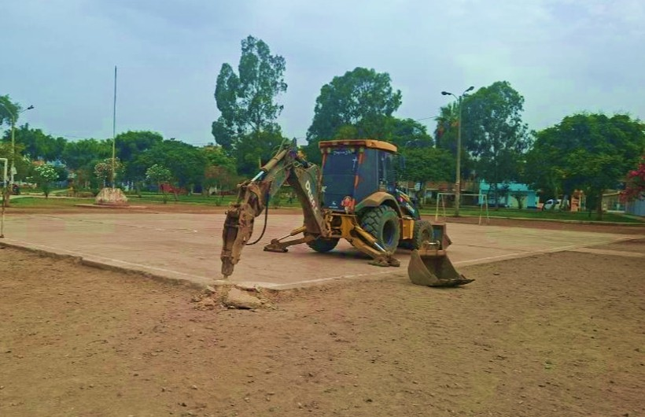

Inicio › Certificaciones
Cuatro certificaciones vigentes
Cada certificado está disponible en PDF para su verificación durante un proceso de selección.
Por qué importan en obra pública
En muchos procesos de selección, las certificaciones otorgan puntaje en el factor de evaluación o son requisito de admisión. Mantenerlas vigentes forma parte de nuestra gestión permanente.
La ISO 37001, sobre gestión antisoborno, es cada vez más exigida por entidades del Estado peruano en contrataciones de obra.
